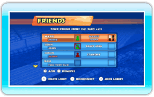
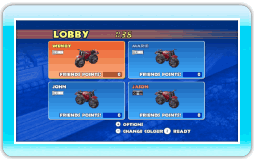
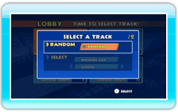
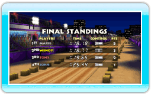

18 |
De Race Friends-stand |
 |
|
In de Race Friends-stand kun je het opnemen tegen je vrienden via de Nintendo Wi-Fi Connection.
Het vriendenscherm geeft de status weer van je geregistreerde vrienden (zie onderstaande tabel). Om deel te nemen aan een race kies je een vriend met een open lobby en druk je op
 . Om een lobby te creëren druk je op . Om een lobby te creëren druk je op  . Wacht vervolgens op je vrienden. . Wacht vervolgens op je vrienden.
Kies de kleur van je motor in het lobbyscherm met
 . Druk op om je keuze te bevestigen. Als je de lobby wilt verlaten, druk je op . Druk op om je keuze te bevestigen. Als je de lobby wilt verlaten, druk je op  om het lobbymenu te openen en kies je LEAVE LOBBY (lobby verlaten). om het lobbymenu te openen en kies je LEAVE LOBBY (lobby verlaten).
Kies een vrijgespeeld parkoers of een parkoers dat je zelf hebt gecreëerd. Je kunt ook kiezen voor RANDOM (willekeu-rig). Zodra elke speler een keuze heeft gemaakt, wordt een van de gekozen parkoersen willekeurig geselecteerd.
Als de race voorbij is, ontvang je Friends Points (vriendenpun-ten) op basis van je positie op de ranglijst. Friends Points kunnen gebruikt worden om speciale ontwerpen voor je motor te kopen.
|
 |
 |
 |